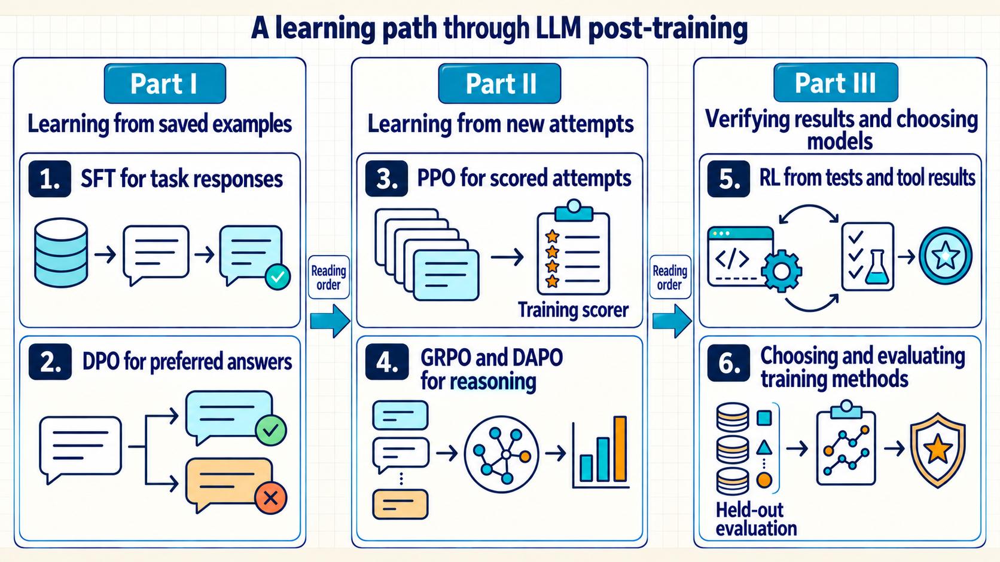
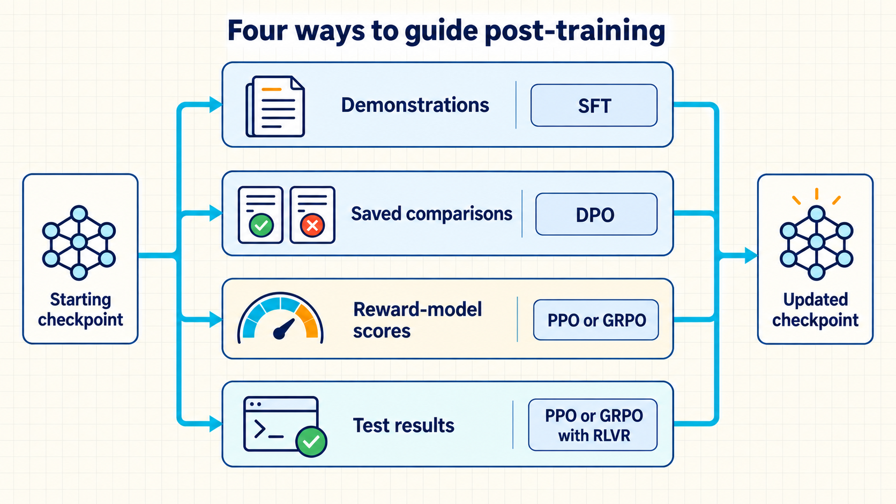

Choosing better LLM answers
Connect the need for useful answers to demonstrations, preferences, scored attempts, and independent evaluation.
From plausible answers to useful results
We start with a large language model (LLM) that has learned from a large collection of text. It can generate several plausible answers to the same request, but the most fluent answer is not necessarily the correct or most useful one. Post-training is further training that makes the behavior we want more likely: following instructions, giving a better answer, solving a problem, or using a tool successfully.1
There are several ways to tell the model what better behavior means. A trusted example shows an answer to imitate. A comparison identifies which of two answers is preferred. Reinforcement learning (RL) lets the model try an answer or action and learn from a score assigned to the result. When success can be checked by a program, such as running tests on generated code, that check can supply the score.
These forms of feedback lead to different training methods. They are not compulsory stages that every model must pass through. The learning sequence begins with demonstrations and comparisons because they explain how text becomes a numerical training target. It then follows newly generated attempts through scoring and model updates, before considering reasoning, tools, and independent evaluation.
For a coding assistant, for example, a trusted fix shows what a useful repair looks like. A comparison can prefer one proposed fix over another. Tests can score a new attempt, and a tool-using assistant can inspect a failure, edit the program, and try again. Whichever training method is used, separate tasks must test whether the saved model really became better.
The same model serves three different purposes. During inference, it generates an answer from a prompt while its parameters stay fixed. During training, demonstrated answers, preferences, or rewards determine a numerical target for changing the parameters. During evaluation, held-out tasks and their expected results or scoring rules measure a saved model without updating it. A higher training score is useful only if the resulting model also performs well on that independent evaluation.
The explanations assume basic probability, logarithms, and Python. They begin with an already trained LLM and focus on choosing feedback, calculating updates, and checking the result. Training a base model from scratch and operating a large serving system are outside the scope. For a first reading, follow the three Parts in order. For a specific task, use the feedback routes below to find the relevant method. Course sources and further reading links the methods to the lectures and notebooks. References collects the papers, reports, and versioned software documentation cited beside the claims they support.
How post-training methods build on one another
Demonstrations make one useful response more likely, while comparisons distinguish between alternatives. Scoring new attempts adds a further possibility: the changing model can learn from answers that were not in a saved dataset. Tests and tool environments determine which results can be checked during that process. The chapter overview links these questions to the six chapters and their course sources.
The whole-book map shows how the six chapters fit into three Parts. Its arrows indicate reading order, not a requirement to train with every method.

Demonstrations and comparisons establish how text is scored. Online methods then learn from new attempts. Verifiers, tools, and held-out comparisons determine whether the resulting model solves the intended task.
| Chapter | Question answered | Primary sources |
|---|---|---|
| 1. SFT for task responses | What can one trusted answer teach? | Session 1; Week 1 summary |
| 2. DPO for preferred answers | How can a chosen/rejected pair update the LLM? | Week 1 summary; Direct Preference Optimization (DPO) preference notebook |
| 3. PPO for scored attempts | How can online updates stay controlled? | Session 2; Proximal Policy Optimization (PPO) summary; practical notebook |
| 4. GRPO and DAPO for reasoning | How can sibling answer scores guide an update? | Session 3; Group Relative Policy Optimization (GRPO) summary |
| 5. RL from tests and tool results | When can tests replace subjective scoring? | Session 3 and Reinforcement Learning with Verifiable Rewards (RLVR) deck |
| 6. Choosing and evaluating training methods | Which route fits the evidence and evaluation? | All module sources |
Feedback routes through post-training
The chapter order explains increasingly involved training calculations. An actual project chooses a route according to its available feedback. A checkpoint is a saved model that can be loaded for training or testing. The routes below can start from a suitable checkpoint rather than from the output of every preceding route.

Read each branch as an evidence test rather than a required sequence through every method.
- Trusted demonstration: Use Supervised Fine-Tuning (SFT) to make one demonstrated behavior more likely.2
- Saved comparison: Use Direct Preference Optimization (DPO) to prefer one recorded answer over another without generating fresh training answers.3
- Scored fresh attempt: Proximal Policy Optimization (PPO) and Group Relative Policy Optimization (GRPO) learn from scores for newly generated answers. They differ in how they compare those results and calculate a training update. Either method can use a suitable reward model or a task check.45
- Executable check: In Reinforcement Learning with Verifiable Rewards (RLVR), tests or known answers supply rewards to a training method such as PPO or GRPO. The checks must cover the intended task, not just an easy-to-test part of it.6 Tool-using tasks also need an environment that returns the result of each action so the model can choose the next action.7
Quick reference
The route names above describe what training learns from. These short reminders are enough to follow the book map. The calculations introduce their own terms where they are needed.
- SFT: Supervised Fine-Tuning learns from demonstrated answers.
- DPO: Direct Preference Optimization learns from saved answer comparisons.
- PPO and GRPO: Proximal Policy Optimization and Group Relative Policy Optimization learn from scores for newly generated attempts.
- RLVR: Reinforcement Learning with Verifiable Rewards uses checkable outcomes, such as tests, as training feedback.
The full glossary collects the model, probability, and training terms for later lookup. It is a reference, not a prerequisite for Chapter 1.
Software foundation for post-training
A training run needs to load examples, calculate how to change the model, save the result, and test it. Python libraries divide these jobs. datasets loads records.8 transformers loads the model and converts text into its numerical input.9 PyTorch calculates gradients and applies optimizer updates.10 Hugging Face Transformer Reinforcement Learning (TRL) supplies trainers for several methods in this book.11 The project still supplies suitable examples and reliable tests.
The first SFT calculation follows one answer through this software before adding preference pairs or newly generated attempts. Each later method introduces the library classes beside the operation they perform. The software reference collects the full job-to-library mapping, and the adapter reference explains the smaller trainable model additions used in the practical examples.
Ouyang, L., et al. (2022). Training language models to follow instructions with human feedback. Advances in Neural Information Processing Systems, 35, 27730–27744. DOI: 10.52202/068431-2011. Official proceedings. Link checked 2026-09-16. Methods and evaluation. The InstructGPT experiments concern the studied models and prompt distribution. The training sequence is one recipe, not a compulsory pipeline.↩︎
Ouyang, L., et al. (2022). Training language models to follow instructions with human feedback. Advances in Neural Information Processing Systems, 35, 27730–27744. DOI: 10.52202/068431-2011. Official proceedings. Link checked 2026-09-16. Methods and evaluation. The InstructGPT experiments concern the studied models and prompt distribution. The training sequence is one recipe, not a compulsory pipeline.↩︎
Rafailov, R., Sharma, A., Mitchell, E., Manning, C. D., Ermon, S., & Finn, C. (2023). Direct Preference Optimization: Your language model is secretly a reward model. Advances in Neural Information Processing Systems, 36. Source. Link checked 2026-09-16. DPO derivation and algorithm. This is the basic offline algorithm, not later online variants.↩︎
Schulman, J., Wolski, F., Dhariwal, P., Radford, A., & Klimov, O. (2017). Proximal Policy Optimization Algorithms. arXiv:1707.06347. Source. Link checked 2026-09-16. Clipped surrogate and algorithm. The reward source is separate from the update rule. Clipping is not a hard trust-region guarantee.↩︎
Shao, Z., et al. (2024). DeepSeekMath: Pushing the Limits of Mathematical Reasoning in Open Language Models (arXiv:2402.03300). Source. Link checked 2026-09-16. Section 4. The original report studies mathematical tasks. Group comparison does not validate the reward.↩︎
Lambert, N., Morrison, J., Pyatkin, V., et al. (2024). Tülu 3: Pushing Frontiers in Open Language Model Post-Training (arXiv:2411.15124, v5). Source. Link checked 2026-09-16. RLVR stage. The report’s verifiable tasks do not establish that any test suite fully covers real task correctness.↩︎
Nakano, R., Hilton, J., Balaji, S., et al. (2021). WebGPT: Browser-assisted question-answering with human feedback (arXiv:2112.09332). Source. Link checked 2026-09-16. Environment and model interface. WebGPT is a browser-based case, not a proof about all tool environments.↩︎
Lhoest, Q., et al. (2021). Datasets: A community library for natural language processing. Proceedings of the 2021 Conference on Empirical Methods in Natural Language Processing: System Demonstrations (pp. 175–184). Association for Computational Linguistics. DOI: 10.18653/v1/2021.emnlp-demo.21. Paper. Link checked 2026-09-16. Section 3. The library provides data operations, not a guarantee against data leakage.↩︎
Wolf, T., et al. (2020). Transformers: State-of-the-art natural language processing. Proceedings of the 2020 Conference on Empirical Methods in Natural Language Processing: System Demonstrations (pp. 38–45). Association for Computational Linguistics. DOI: 10.18653/v1/2020.emnlp-demos.6. Paper. Link checked 2026-09-16. Section 3, Figure 2. Tokenizer and model configuration must match the checkpoint.↩︎
Paszke, A., et al. (2019). PyTorch: An imperative style, high-performance deep learning library. Advances in Neural Information Processing Systems, 32. Original paper. Link checked 2026-09-16. Sections 2,4.3 and 5.1. Automatic differentiation does not validate the selected loss or data.↩︎
Hugging Face. (2025). TRL: Transformer Reinforcement Learning (v0.22.2 documentation). Official documentation. Link checked 2026-09-16. Version 0.22.2 trainer documentation. This is official API documentation, not experimental evidence for a method’s superiority.↩︎